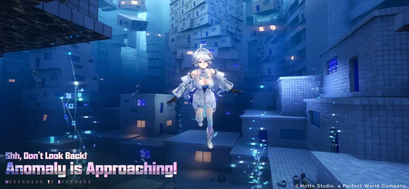

Shaharni aylaning
Avval tanish ko‘chalarni piyoda aylanib ko‘ring. Transport ochilgach, odam kam joyda burilish va tormozni mashq qiling.

Neverness to Everness — Hotta Studio yaratgan ochiq olam RPG o‘yini. Hethereau ko‘chalarida g‘ayritabiiy hodisalarni o‘rganasiz, Esper qobiliyatlaridan foydalanasiz va o‘zingizga mos shahar hayotini tanlaysiz.
Rasmiy o‘yin saytiAvval tanish ko‘chalarni piyoda aylanib ko‘ring. Transport ochilgach, odam kam joyda burilish va tormozni mashq qiling.

G‘ayritabiiy hodisaga duch kelsangiz, jurnaldagi topshiriq tavsifini o‘qing. Atrofdagi belgilar va ekrandagi ko‘rsatmalarga e’tibor bering.